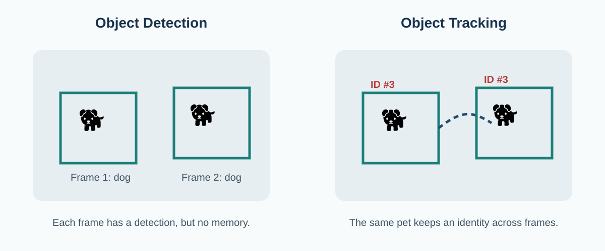

Pet Detection and Tracking
Detection answers “Where is the pet in this frame?” Tracking answers “Is this the same pet I saw in the previous frames?” A restricted-area monitor needs both.
Object detection
An object detector processes an image or video frame and predicts objects, class labels, confidence scores, and bounding boxes. YOLO-family detectors are popular because they are designed for fast, single-stage detection. In this project, the important output is the pet bounding box:
(x1, y1) ---------
| |
| DOG |
| |
--------- (x2, y2)The bounding box provides a location in image coordinates. Detection alone, however, treats every frame as a new prediction. If the same dog appears in 100 frames, there may be 100 detections, but no built-in memory that they all belong to the same individual.

Why tracking is necessary
Wang and Mariano combined a YOLOv8-based detector with ByteTrack for multi-object tracking, showing the common design pattern of using a detector first and a tracker second.[2] Tracking is especially important for restricted-area monitoring because the system may need to know when one specific pet entered a zone, how long that pet stayed there, and whether it later left.
Research on domestic cats also shows why pet tracking is not always easy. Nakajima and colleagues reported that fine-tuning YOLO on their own domestic-cat video data improved tracking and enabled individual animals to be followed more accurately; their work also used BoT-SORT in the tracking pipeline.[3] This is useful evidence that a general detector may need pet-specific data when animals look similar or multiple animals appear together.
How a tracker works at a high level
A tracker receives detections from the current frame and compares them with tracks from earlier frames. Different trackers use different combinations of motion prediction, overlap, confidence, and visual appearance. The goal is to associate a new detection with the correct existing track.
ByteTrack
Associates detections across frames and is designed to use both high- and lower-confidence detections during matching. It is useful when an object becomes harder to see for a short time.
BoT-SORT
Combines motion and appearance information. It can be helpful in multi-object scenes where identity switches are a concern.
Example tracking logic
# simplified pseudocode
for frame in video:
detections = detector(frame)
tracks = tracker.update(detections)
for track in tracks:
pet_id = track.id
box = track.bounding_box
save_position(pet_id, box)The important new variable is pet_id. Once the system has an identity, it can store a short history for each pet:
history[3] = [
(time=0.0, x=205, y=320),
(time=0.1, x=219, y=316),
(time=0.2, x=236, y=309)
]This history supports zone-entry timing, movement analysis, and behavior recognition.
Detection vs. tracking comparison
| Question | Detection | Tracking |
|---|---|---|
| Main purpose | Locate and classify an object in one frame | Maintain object identity across frames |
| Typical output | Class, confidence, bounding box | Track ID, bounding box, trajectory/history |
| Needed for restricted zones? | Yes, to find the pet | Yes, to measure entry, exit, and dwell time reliably |
| Main failure example | Missed or false detection | ID switch or lost track |
When would I use one tracker over another?
For a small home scene with one dog, a simple fast tracker may be enough. With multiple similar-looking pets, brief occlusion, or pets crossing each other's paths, appearance-aware tracking becomes more useful. The best choice also depends on the processing power available on the target device. For a mobile or edge system, speed and memory use matter in addition to tracking accuracy.